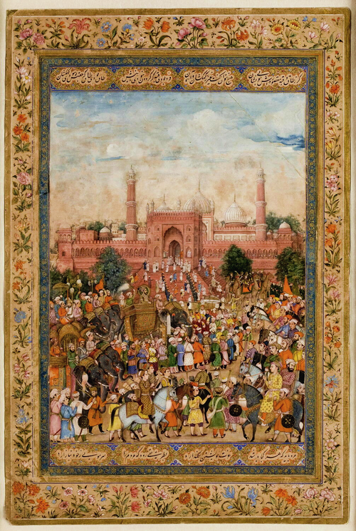

Overview
The Mughal Empire was known for its rich culture, monumental architecture like the Taj Mahal, and centralized administration.
Mughal architecture blending Persian, Indian, and Islamic styles
Prominent Rulers
From Babur to Aurangzeb, the Mughals expanded and consolidated their empire across India.
Culture and Contributions
Mughals contributed immensely to literature, gardens, music, and cuisine in India.